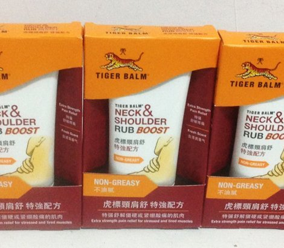
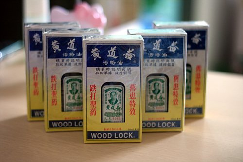

香港有哪些值得买的药品
虎标颈肩舒

迅速舒缓肩颈酸痛，乳霜状的质地不会油腻 ，强效配方，清爽，针对肩周炎，颈椎不好等各种症状，具有极好的舒缓作用。适合上班族，及中老年的爸爸妈妈。
黄道益活络油

黄道益医师集数十年医床经验创制，选用高质天然药料，配以止痛药材精练而成，舒筋活络，去瘀生新，增强身体自然康复机能。适应范围：跌打肿痛、新伤旧患、腰酸背痛、骨刺增生、舒筋活络、伤风感冒、头晕眼花、风火牙痛、药力特强、安心常用。
双飞人药水

具有伤风感冒、肚痛疴呕、蚊咬止痒、消化不良、烫火灼伤、牙痛头痛、消暑提神、驱风救急、舟车晕浪、消毒止炎的功效。可内服，成人每次七八滴小儿二三滴，用温暖茶水冲服或滴在方糖上放入口内更佳。
无比滴

可迅速止痒，用于昆虫咬后局部瘙痒和疼痛、亦可用于缓解运动后的局部肌肉疲劳。消除疼痛，是带来清凉舒畅感觉的优质白色软膏。
来源：十六番